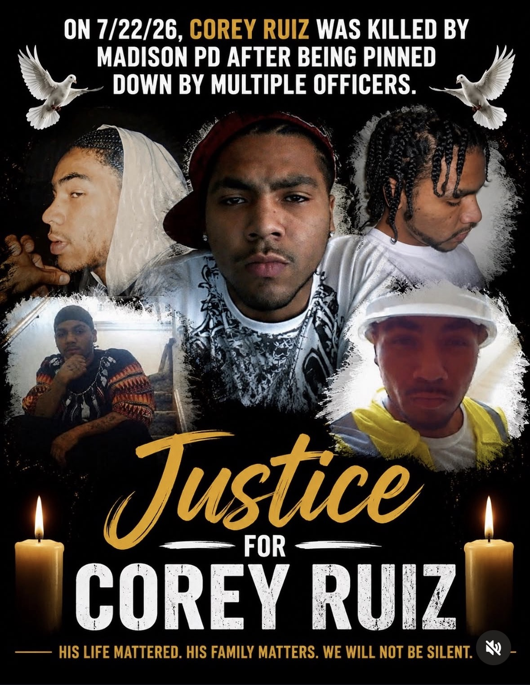

JUSTICE FOR COREY RUIZ. July 22, 2026 | Madison, Wisconsin. On July 22, 2026, Corey Ruiz was fatally shot by officers with the Madison Police Department during an attempted arrest. According to Madison police, officers responded to reports of a man attempting to enter parked vehicles. Police say Corey fled on a bicycle before a struggle ensued. Authorities allege he produced a knife during the confrontation, and an officer then fired multiple shots, killing him. However, cellphone video recorded by a witness has sparked national attention. The footage appears to show multiple officers restraining Corey on the ground before shots were fired. A witness told reporters he did not see Corey brandish a weapon and said Corey was attempting to get up when he was shot. The Wisconsin Department of Justice has launched an independent investigation. The officers involved have been placed on administrative leave. Sources: Wisconsin Department of Justice; Madison Police Department; Wisconsin Public Radio; witness statements. #JusticeForCoreyRuiz #CoreyRuiz #MadisonWI #BlackLivesMatter #ChicagoContentCreator
Claims checked
On July 22, 2026, Corey Ruiz was fatally shot by Madison Police Department officers in Madison, Wisconsin.
Widely reported and confirmed by the Madison Police Department. The man was identified as Corey Durell Ruiz, 36, of Sun Prairie, Wisconsin. Shooting occurred the afternoon of July 22, 2026 on Madison's near east side.
Officers responded to reports of a man attempting to enter / checking parked vehicles.
Police say officers were dispatched around 1 p.m. to a report of a person checking or attempting to enter parked cars in the Marquette/near-east-side neighborhood.
Corey fled on a bicycle before a struggle ensued.
Police account: the man rode away on a bicycle through nearby backyards, officers re-engaged around 1:35 p.m. at the intersection of S. Baldwin and Williamson Streets, he fell or was pulled off the bicycle, and a struggle followed.
Authorities allege he produced a knife during the confrontation, and an officer then fired multiple shots, killing him.
Per Police Chief John Patterson, the man produced a fixed-blade knife and injured one officer; a Taser deployment was unsuccessful, and the injured officer (described as a veteran, the only one of four to fire) then fired his weapon multiple times. This is the official/police account; the exact number of shots has not been publicly released, and witness video does not clearly show the knife (see separate claim).
Cellphone video recorded by a witness appears to show multiple officers restraining Corey on the ground before shots were fired (he was 'pinned down by multiple officers').
Two witness cellphone videos circulated widely. Reporting describes several officers wrestling the man to the ground; four officers were involved in the struggle. One video reportedly shows an officer appearing to stomp the man while he was on the ground as the first shot was fired. No official body-camera footage exists (see body-camera claim).
A witness told reporters he did not see Corey brandish a weapon and said Corey was attempting to get up when he was shot.
Witnesses did publicly question the shooting and reporting notes a knife 'does not appear to be seen during the struggle' in the videos (an officer is seen seizing and discarding what appears to be a knife); one woman on video screams 'I saw everything. You did not need to kill him.' The specific detail that a named witness said Corey was 'attempting to get up when he was shot' is not clearly corroborated in the sources reviewed; video accounts describe him on the ground being restrained when the first shot was fired.
The Wisconsin Department of Justice has launched an independent investigation, standard procedure in officer-involved fatal shootings.
The Wisconsin DOJ Division of Criminal Investigation assumed the investigation, as required by Wisconsin state law (Wis. Stat. 175.47) for officer-involved deaths.
The officers involved have been placed on administrative leave.
The four responding officers were placed on administrative leave per department policy while the investigation proceeds.
Body-camera footage will be among the evidence critical to determining what happened.
No body-camera footage exists. Madison Police Department officers are not equipped with body cameras; Chief Patterson has said he is seeking funding for them in the 2027 city budget. Because there is no bodycam footage, the only video is from witness cellphones. The post's inclusion of 'body-camera footage' among available evidence is misleading.
The shooting sparked national attention and protests, including a march on the Wisconsin State Capitol.
Hundreds of protesters gathered at the scene and marched downtown / on the Capitol the evening of July 22, with some chanting 'Arrest the cops!' The case drew national news coverage (CBS, NBC, CNN, Newsweek).
Interpretation (ungraded)
- The framing 'Justice for Corey Ruiz' and 'We will not be silent' expresses an advocacy position rather than a verifiable fact.
- The implication that the shooting was unjustified or unnecessary is a contested interpretation; the police account (knife, injured officer) and witness accounts (questioning the use of force) conflict and the investigation is ongoing.
- Characterizations such as 'His life mattered' and 'He was someone's son' are memorial/opinion statements, not checkable claims.
- The account's self-description as a 'Chicago Content Creator' and the '#ChicagoContentCreator' hashtag indicate this is a commentary/advocacy account, not a Madison-based news outlet.
What the sources establish
The post, by the Instagram advocacy account @realblackgirlpolitics, concerns the death of Corey Durell Ruiz, a 36-year-old Sun Prairie, Wisconsin man who was fatally shot by a Madison Police Department officer on the afternoon of July 22, 2026. The core facts are accurate and well-documented by the Madison Police Department and national outlets including CBS, NBC, CNN and Newsweek. Police say officers responded to a report of a man checking parked vehicles, that Ruiz fled on a bicycle, and that during a subsequent struggle at the intersection of Williamson and Baldwin Streets he produced a fixed-blade knife and injured an officer; after an unsuccessful Taser deployment, the injured officer fired multiple shots. The Wisconsin Department of Justice's Division of Criminal Investigation is independently investigating, as required by state law, and the involved officers were placed on administrative leave.
The post accurately conveys the contested nature of the case. Two witness cellphone videos circulated widely, and reporting notes that a knife is not clearly visible in the footage while officers are seen restraining Ruiz on the ground; one witness is heard saying, "You did not need to kill him." The post's statement that multiple officers had him pinned before shots were fired is consistent with both the videos and the police account that four officers were involved in the struggle. The narrower claim that a witness said Ruiz was "attempting to get up when he was shot" is only partially corroborated; sources describe him being restrained on the ground when the first shot was fired.
One element of the post is misleading: it lists body-camera footage among the evidence that will help determine what happened. Madison police officers do not wear body cameras, so no such footage exists, and the only video comes from witnesses' phones. Otherwise the post is cautious and largely factual, explicitly noting the investigation is active and that details may change. Because the investigation is ongoing, no official findings, autopsy conclusions, or prosecutorial decision had been issued as of the July 23, 2026 collection date.
Sources
- Primary Man fatally shot during altercation with police — City of Madison Police incident report
- Secondary Man shot and killed by police in Madison, Wisconsin, sparking protests — CBS News
- Secondary Wisconsin officer kills man armed with knife, police say, as shooting sparks protests — NBC News
- Secondary Fatal police shooting of man officials say was armed with knife prompts protests — CNN
- Secondary Madison police kill man in broad daylight in front of witnesses — Wisconsin Examiner
- Secondary What Videos Reveal About Officer Shooting of Corey Ruiz — Newsweek
- Secondary Who Is Corey Ruiz? Man Reportedly Shot by Officer in Madison, Wisconsin — Newsweek
- Secondary Madison Police Shooting Video: Corey Durell Ruiz; Chief Says He Injured Officer With Knife — Wisconsin Right Now
Share this
The post is largely accurate: Corey Durell Ruiz, 36, was fatally shot by a Madison, WI police officer on July 22, 2026, and police say he produced a knife and injured an officer during a struggle, while witness videos and bystanders questioned whether deadly force was necessary. The Wisconsin DOJ is investigating and the officers were placed on leave. The main flaw is the post's reference to body-camera footage, which does not exist because Madison officers do not wear body cameras.
Checked against primary sources
CALL AND RESPONSE
Checked against primary sources where available. Researched with AI, reviewed by a human editor.